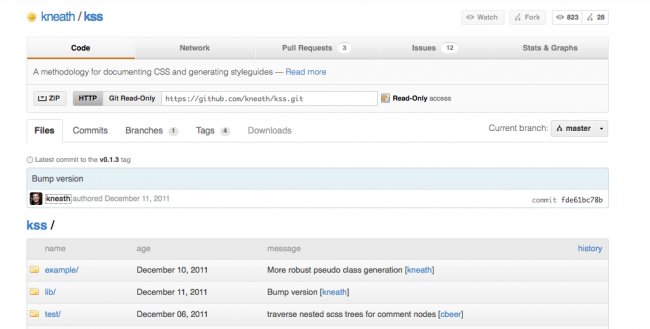

|  |

Ya hemos comentado en más de una ocasión que darse un paseo virtual por GitHub es sinónimo siempre de encontrar proyectos realmente interesantes. Uno de ellos es KSS (de Knyle Style Sheets), un proyecto de un usuario bastante prolífico y conocido llamado Kneath con la intención de proveer una metodología para escribir ficheros CSS mantenibles y documentados. Esto, cuando se trata de un proyecto unipersonal quizás no es del todo necesario (aunque a mi personalamente si que me lo parece) pero cuando hay varias personas tocando los estilos, eso puede ser la Guerra de Corea (o el primer día de rebajas en El Corte Inglés de Sol): un descontrol al que hay que meter en vereda.
Desde luego que hay más opciones para realizar esta tarea (podéis comentar vuestros favoritos en los comentarios) pero este KSS tiene buena pinta porque está muy orientado al trabajo con preprocesadores CSS como LESS, tiene una estructura jerárquica (lo que ayuda a no repetirse) y porque el proyecto está bien documentado (faltaría más, ¿no?) y contiene bastantes ejemplos tanto de implementación como de resultados.
Cuantas más posibilidades haya para que nuestro trabajo sea mejor, más organizado y menos costos, mejor. Pues eso.
Vía | GitHub
| |